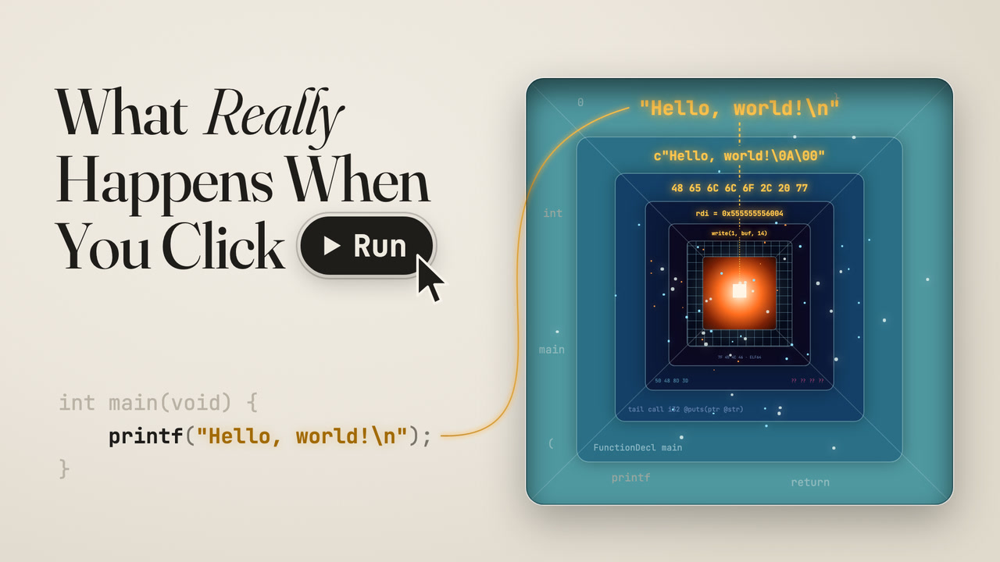
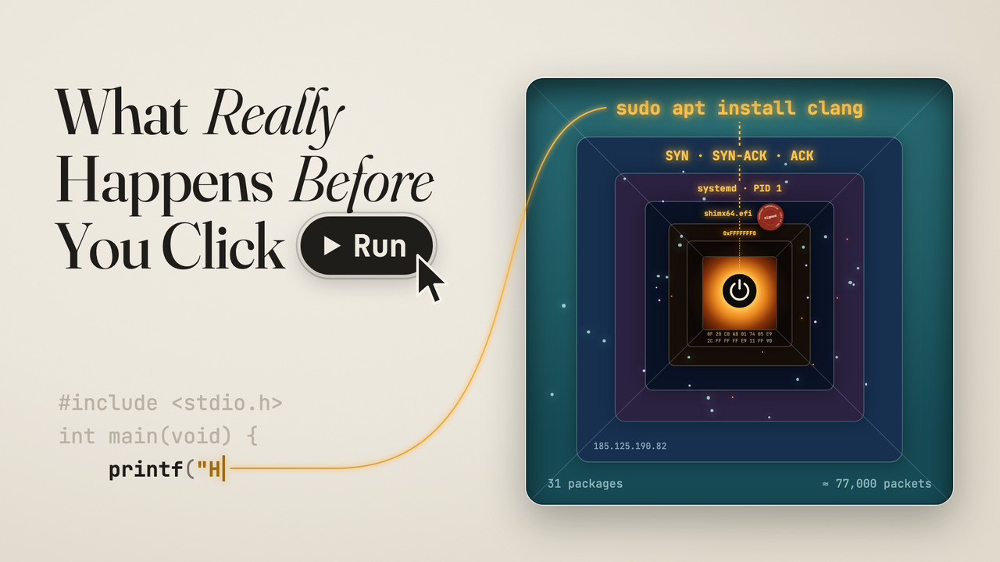

What Really Happens When You Click Run
点下 Run 的那一瞬间，到底发生了什么？
From the Run button down to silicon, and back up as light.
从 Run 按钮一路下到硅片，再化作光回到屏幕上。

What Really Happens Before You Click Run
点下 Run 之前，到底发生了什么？
Power, firmware, a kernel, 77,000 packets, one keystroke and one save, all before Run means anything.
通电、固件、内核、7.7 万个数据包、一次按键、一次保存：都发生在 Run 起作用之前。